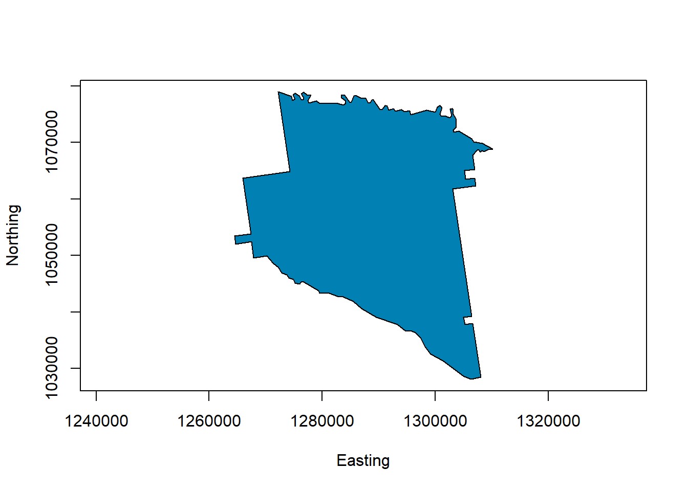

x1 <- rnorm(100)
y1 <- rnorm(100)
plot(x1,y1)plot(x1,y1,pch=16, col='red')x2 <- seq(0,2*pi,len=100)
y2 <- sin(x2)
plot(x2,y2,type='l')plot(x2,y2,type='l', lwd=3, col='darkgreen') plot(x2,y2,type='l', col='darkgreen', lwd=3, ylim=c(-1.2,1.2));
y2r <- y2 + rnorm(100,0,0.1)
points(x2,y2r, pch=16, col='darkred')#install.packages("GISTools", depend = T)
library(GISTools)
# library(GISTools)
data(georgia)
# seleciona o primeiro elemento - Município Appling
appling <- georgia.polys[[1]]
# determinar a extensão da representação
plot(appling, asp=1, type='n', xlab="Easting", ylab="Northing")
# plot the selected features with hatching
polygon(appling, density=14, angle=135) colours()## [1] "white" "aliceblue" "antiquewhite" "antiquewhite1" "antiquewhite2"
## [6] "antiquewhite3" "antiquewhite4" "aquamarine" "aquamarine1" "aquamarine2"
## [11] "aquamarine3" "aquamarine4" "azure" "azure1" "azure2"
## [16] "azure3" "azure4" "beige" "bisque" "bisque1"
## [21] "bisque2" "bisque3" "bisque4" "black" "blanchedalmond"
## [26] "blue" "blue1" "blue2" "blue3" "blue4"
## [31] "blueviolet" "brown" "brown1" "brown2" "brown3"
## [36] "brown4" "burlywood" "burlywood1" "burlywood2" "burlywood3"
## [41] "burlywood4" "cadetblue" "cadetblue1" "cadetblue2" "cadetblue3"
## [46] "cadetblue4" "chartreuse" "chartreuse1" "chartreuse2" "chartreuse3"
## [51] "chartreuse4" "chocolate" "chocolate1" "chocolate2" "chocolate3"
## [56] "chocolate4" "coral" "coral1" "coral2" "coral3"
## [61] "coral4" "cornflowerblue" "cornsilk" "cornsilk1" "cornsilk2"
## [66] "cornsilk3" "cornsilk4" "cyan" "cyan1" "cyan2"
## [71] "cyan3" "cyan4" "darkblue" "darkcyan" "darkgoldenrod"
## [76] "darkgoldenrod1" "darkgoldenrod2" "darkgoldenrod3" "darkgoldenrod4" "darkgray"
## [81] "darkgreen" "darkgrey" "darkkhaki" "darkmagenta" "darkolivegreen"
## [86] "darkolivegreen1" "darkolivegreen2" "darkolivegreen3" "darkolivegreen4" "darkorange"
## [91] "darkorange1" "darkorange2" "darkorange3" "darkorange4" "darkorchid"
## [96] "darkorchid1" "darkorchid2" "darkorchid3" "darkorchid4" "darkred"
## [101] "darksalmon" "darkseagreen" "darkseagreen1" "darkseagreen2" "darkseagreen3"
## [106] "darkseagreen4" "darkslateblue" "darkslategray" "darkslategray1" "darkslategray2"
## [111] "darkslategray3" "darkslategray4" "darkslategrey" "darkturquoise" "darkviolet"
## [116] "deeppink" "deeppink1" "deeppink2" "deeppink3" "deeppink4"
## [121] "deepskyblue" "deepskyblue1" "deepskyblue2" "deepskyblue3" "deepskyblue4"
## [126] "dimgray" "dimgrey" "dodgerblue" "dodgerblue1" "dodgerblue2"
## [131] "dodgerblue3" "dodgerblue4" "firebrick" "firebrick1" "firebrick2"
## [136] "firebrick3" "firebrick4" "floralwhite" "forestgreen" "gainsboro"
## [141] "ghostwhite" "gold" "gold1" "gold2" "gold3"
## [146] "gold4" "goldenrod" "goldenrod1" "goldenrod2" "goldenrod3"
## [151] "goldenrod4" "gray" "gray0" "gray1" "gray2"
## [156] "gray3" "gray4" "gray5" "gray6" "gray7"
## [161] "gray8" "gray9" "gray10" "gray11" "gray12"
## [166] "gray13" "gray14" "gray15" "gray16" "gray17"
## [171] "gray18" "gray19" "gray20" "gray21" "gray22"
## [176] "gray23" "gray24" "gray25" "gray26" "gray27"
## [181] "gray28" "gray29" "gray30" "gray31" "gray32"
## [186] "gray33" "gray34" "gray35" "gray36" "gray37"
## [191] "gray38" "gray39" "gray40" "gray41" "gray42"
## [196] "gray43" "gray44" "gray45" "gray46" "gray47"
## [201] "gray48" "gray49" "gray50" "gray51" "gray52"
## [206] "gray53" "gray54" "gray55" "gray56" "gray57"
## [211] "gray58" "gray59" "gray60" "gray61" "gray62"
## [216] "gray63" "gray64" "gray65" "gray66" "gray67"
## [221] "gray68" "gray69" "gray70" "gray71" "gray72"
## [226] "gray73" "gray74" "gray75" "gray76" "gray77"
## [231] "gray78" "gray79" "gray80" "gray81" "gray82"
## [236] "gray83" "gray84" "gray85" "gray86" "gray87"
## [241] "gray88" "gray89" "gray90" "gray91" "gray92"
## [246] "gray93" "gray94" "gray95" "gray96" "gray97"
## [251] "gray98" "gray99" "gray100" "green" "green1"
## [256] "green2" "green3" "green4" "greenyellow" "grey"
## [261] "grey0" "grey1" "grey2" "grey3" "grey4"
## [266] "grey5" "grey6" "grey7" "grey8" "grey9"
## [271] "grey10" "grey11" "grey12" "grey13" "grey14"
## [276] "grey15" "grey16" "grey17" "grey18" "grey19"
## [281] "grey20" "grey21" "grey22" "grey23" "grey24"
## [286] "grey25" "grey26" "grey27" "grey28" "grey29"
## [291] "grey30" "grey31" "grey32" "grey33" "grey34"
## [296] "grey35" "grey36" "grey37" "grey38" "grey39"
## [301] "grey40" "grey41" "grey42" "grey43" "grey44"
## [306] "grey45" "grey46" "grey47" "grey48" "grey49"
## [311] "grey50" "grey51" "grey52" "grey53" "grey54"
## [316] "grey55" "grey56" "grey57" "grey58" "grey59"
## [321] "grey60" "grey61" "grey62" "grey63" "grey64"
## [326] "grey65" "grey66" "grey67" "grey68" "grey69"
## [331] "grey70" "grey71" "grey72" "grey73" "grey74"
## [336] "grey75" "grey76" "grey77" "grey78" "grey79"
## [341] "grey80" "grey81" "grey82" "grey83" "grey84"
## [346] "grey85" "grey86" "grey87" "grey88" "grey89"
## [351] "grey90" "grey91" "grey92" "grey93" "grey94"
## [356] "grey95" "grey96" "grey97" "grey98" "grey99"
## [361] "grey100" "honeydew" "honeydew1" "honeydew2" "honeydew3"
## [366] "honeydew4" "hotpink" "hotpink1" "hotpink2" "hotpink3"
## [371] "hotpink4" "indianred" "indianred1" "indianred2" "indianred3"
## [376] "indianred4" "ivory" "ivory1" "ivory2" "ivory3"
## [381] "ivory4" "khaki" "khaki1" "khaki2" "khaki3"
## [386] "khaki4" "lavender" "lavenderblush" "lavenderblush1" "lavenderblush2"
## [391] "lavenderblush3" "lavenderblush4" "lawngreen" "lemonchiffon" "lemonchiffon1"
## [396] "lemonchiffon2" "lemonchiffon3" "lemonchiffon4" "lightblue" "lightblue1"
## [401] "lightblue2" "lightblue3" "lightblue4" "lightcoral" "lightcyan"
## [406] "lightcyan1" "lightcyan2" "lightcyan3" "lightcyan4" "lightgoldenrod"
## [411] "lightgoldenrod1" "lightgoldenrod2" "lightgoldenrod3" "lightgoldenrod4" "lightgoldenrodyellow"
## [416] "lightgray" "lightgreen" "lightgrey" "lightpink" "lightpink1"
## [421] "lightpink2" "lightpink3" "lightpink4" "lightsalmon" "lightsalmon1"
## [426] "lightsalmon2" "lightsalmon3" "lightsalmon4" "lightseagreen" "lightskyblue"
## [431] "lightskyblue1" "lightskyblue2" "lightskyblue3" "lightskyblue4" "lightslateblue"
## [436] "lightslategray" "lightslategrey" "lightsteelblue" "lightsteelblue1" "lightsteelblue2"
## [441] "lightsteelblue3" "lightsteelblue4" "lightyellow" "lightyellow1" "lightyellow2"
## [446] "lightyellow3" "lightyellow4" "limegreen" "linen" "magenta"
## [451] "magenta1" "magenta2" "magenta3" "magenta4" "maroon"
## [456] "maroon1" "maroon2" "maroon3" "maroon4" "mediumaquamarine"
## [461] "mediumblue" "mediumorchid" "mediumorchid1" "mediumorchid2" "mediumorchid3"
## [466] "mediumorchid4" "mediumpurple" "mediumpurple1" "mediumpurple2" "mediumpurple3"
## [471] "mediumpurple4" "mediumseagreen" "mediumslateblue" "mediumspringgreen" "mediumturquoise"
## [476] "mediumvioletred" "midnightblue" "mintcream" "mistyrose" "mistyrose1"
## [481] "mistyrose2" "mistyrose3" "mistyrose4" "moccasin" "navajowhite"
## [486] "navajowhite1" "navajowhite2" "navajowhite3" "navajowhite4" "navy"
## [491] "navyblue" "oldlace" "olivedrab" "olivedrab1" "olivedrab2"
## [496] "olivedrab3" "olivedrab4" "orange" "orange1" "orange2"
## [501] "orange3" "orange4" "orangered" "orangered1" "orangered2"
## [506] "orangered3" "orangered4" "orchid" "orchid1" "orchid2"
## [511] "orchid3" "orchid4" "palegoldenrod" "palegreen" "palegreen1"
## [516] "palegreen2" "palegreen3" "palegreen4" "paleturquoise" "paleturquoise1"
## [521] "paleturquoise2" "paleturquoise3" "paleturquoise4" "palevioletred" "palevioletred1"
## [526] "palevioletred2" "palevioletred3" "palevioletred4" "papayawhip" "peachpuff"
## [531] "peachpuff1" "peachpuff2" "peachpuff3" "peachpuff4" "peru"
## [536] "pink" "pink1" "pink2" "pink3" "pink4"
## [541] "plum" "plum1" "plum2" "plum3" "plum4"
## [546] "powderblue" "purple" "purple1" "purple2" "purple3"
## [551] "purple4" "red" "red1" "red2" "red3"
## [556] "red4" "rosybrown" "rosybrown1" "rosybrown2" "rosybrown3"
## [561] "rosybrown4" "royalblue" "royalblue1" "royalblue2" "royalblue3"
## [566] "royalblue4" "saddlebrown" "salmon" "salmon1" "salmon2"
## [571] "salmon3" "salmon4" "sandybrown" "seagreen" "seagreen1"
## [576] "seagreen2" "seagreen3" "seagreen4" "seashell" "seashell1"
## [581] "seashell2" "seashell3" "seashell4" "sienna" "sienna1"
## [586] "sienna2" "sienna3" "sienna4" "skyblue" "skyblue1"
## [591] "skyblue2" "skyblue3" "skyblue4" "slateblue" "slateblue1"
## [596] "slateblue2" "slateblue3" "slateblue4" "slategray" "slategray1"
## [601] "slategray2" "slategray3" "slategray4" "slategrey" "snow"
## [606] "snow1" "snow2" "snow3" "snow4" "springgreen"
## [611] "springgreen1" "springgreen2" "springgreen3" "springgreen4" "steelblue"
## [616] "steelblue1" "steelblue2" "steelblue3" "steelblue4" "tan"
## [621] "tan1" "tan2" "tan3" "tan4" "thistle"
## [626] "thistle1" "thistle2" "thistle3" "thistle4" "tomato"
## [631] "tomato1" "tomato2" "tomato3" "tomato4" "turquoise"
## [636] "turquoise1" "turquoise2" "turquoise3" "turquoise4" "violet"
## [641] "violetred" "violetred1" "violetred2" "violetred3" "violetred4"
## [646] "wheat" "wheat1" "wheat2" "wheat3" "wheat4"
## [651] "whitesmoke" "yellow" "yellow1" "yellow2" "yellow3"
## [656] "yellow4" "yellowgreen"plot(appling, asp=1, type='n', xlab="Easting", ylab="Northing")
polygon(appling, col=rgb(0,0.5,0.7))
# set the plot extent
plot(appling, asp=1, type='n', xlab="Easting", ylab="Northing")
# plot the points
points(x = runif(500,126,132)*10000,
y = runif(500,103,108)*10000, pch=16, col='red')
# plot the polygon with a transparency factor
polygon(appling, col=rgb(0,0.5,0.7,0.4))ggplotA sintaxe do package ggplot é estruturada por meio da chamada dos dados e complementada pela aesthetic (propriedades do gráfico que vão representar certos elementos dos dados) e por funções que chamam diferentes tipos de gráficos.
Gráficos com duas dimensões requerem aesthetics x e y. Todos esses tipos de gráficos possibilitam o uso de outras aesthetics como color, size e fill.
Algumas aesthetics básicas são:
| Código | Descrição |
|---|---|
| x | posição no eixo-x |
| y | posição no eixo-y |
| shape | forma |
| color | cor da borda dos elementos |
| fill | cor de preenchimento dos elementos |
| size | tamanho |
| alpha | transparência (1:opaco; 0:transparente) |
| linetype | tipo de linha (solid; dashed) |
Questão 1: Abra o data.frame “iris”.